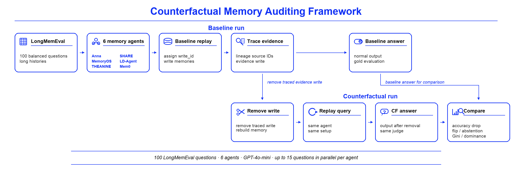

Trace evidence writes
We connect answer-stage evidence back to the original memory writes that produced it.
Counterfactual auditing for long-term agent memory
We evaluate memory agents by asking a causal question: if one traced memory write is removed, does the final answer change? This shows whether a memory item was only retrieved or actually controlled the answer.
Accuracy tells us whether the final answer matches the gold answer. Our audit asks what caused that answer. We trace evidence writes, remove one write, and replay the same query.
We connect answer-stage evidence back to the original memory writes that produced it.
We delete one traced evidence write and keep the question fixed.
We measure answer changes, abstention flips, and shifts in memory dependence.

The audit follows a normal run, traces evidence to memory writes, removes one write, and compares the counterfactual answer with the baseline answer.
We use the intervention to separate final correctness from memory behavior. This makes several hidden failure modes visible.
Two agents can have similar accuracy while using memory in very different ways.
An agent can retrieve the right memory without letting that memory dominate the answer.
Some systems route many answers through a small number of influential memory writes.
The report compares downstream accuracy with counterfactual signals that describe how memory affects the answer.
How often the final answer changes after a traced write is removed.
Whether answer influence is spread out or concentrated in a few writes.
How far back the influential memory writes are from the query time.
Read the complete ACL-style report, including setup, related work, results, and discussion.